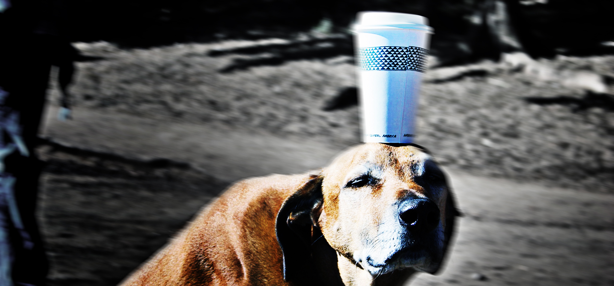

Die durchschlagende Wirkung von Kaffee

Donnerstags muss ich um 8 Uhr morgens in der Uni sein. Und Hand aufs Herz: Ich bin Student, das ist definitiv "vor dem Aufstehen", wie der Volksmund so schön sagt. Also mache ich mich allwöchentlich, während die Vögel tirilieren und der Nebel aus den Wiesen steigt, auf den Weg zur Uni, und lasse mir dabei die Nase von den ersten Sonnenstrahlen kitzeln. Ein Hoch auf den Heuschnupfen.
Allerdings reicht es nicht zur Vorlesung hinzugehen, man muss sie auch durchstehen ohne wegzuratzen. Ein schwieriges Unterfangen. Es sei denn, man genießt vor Antritt einen heißen Bohnenkaffe. Dieser hält einen garantiert wach.
Aber nicht das Koffein ist es, was einen vom Schlafen abhält, sondern die überaus verdauungsförderne Wirkung. So sitze ich denn jedes mal mit zusammengekniffenen Backen und zitternem Leib im Hörsaal und kann das Ende gar nicht erwarten, um endlich die Örtlichkeiten aufzusuchen und mein zutiefst menschliches Bedürfnis zu befriedigen.
Und was bringt es mir am Ende? Nicht viel, denn während ich mich konzentriere meine Ladung nicht vorzeitig zu verlieren, kriege ich von den tiefschürfenden ökonomischen Theorien genauso viel mit, wie die Leute, die neben mir knacken wie die Schweine.
Schöne Scheiße…
Bild: Buddha dog von SuperFantastic unter CC-Lizenz


6 Kommentare zu "Die durchschlagende Wirkung von Kaffee"
- Externe Links im selben Fenster öffnen
- Externe Links in neuem Fenster öffnen
Daniel
Kein Mitleid von meiner Seite sage ich mal. Ich muss Di und Do um 8h in der FH und da diese nun mal am anderen Ende von Hannover liegt, also der Expo, heißt das für mich um viertel nach sieben raus aus dem Haus.
Was Dein anderes Problem angeht, einfach mal vor der
Vorlesung das Örtchen aufsuchen.
Herschel Rubinstein
ich möchte kein mitleid, ich möchte die menschen nur warnen. vor kaffee!
und vorher geht nichts, erst der kaffee bringt den nötigen schwung in die schläuche.
Jupp
@Daniel: du bekommst von mir auch kein Mitleid.
Ganz meine Reden, Kaffee ist besser als jeder Ballaststoff.
Ein heißen Schwarzen und die nächste Schüssel ist deine.
Klaus
Wie verhält es sich denn mit Mate-Tee? So weit ich weiß macht der auch wach und schmeckt auch scheiße...vielleicht kann er der neue Kaffee werden?
Herschel Rubinstein
mate-tee hat blöderweise die gleiche durchschlagende wirkung wie kaffee.
jasper.
bei mir eher in der blasenregion...also der mate!